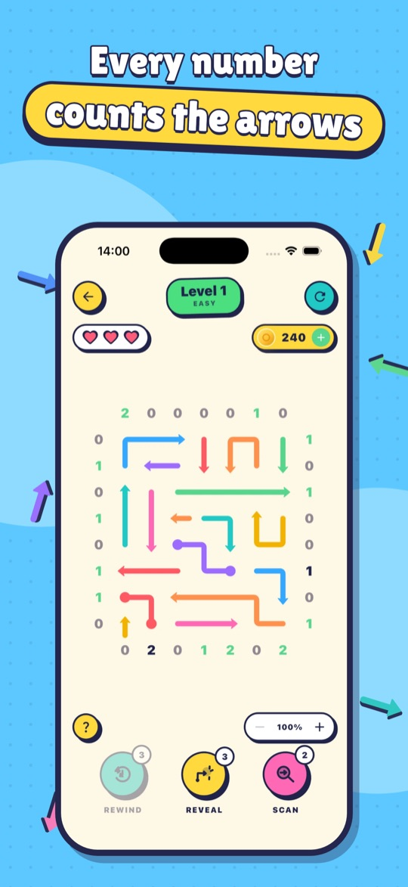
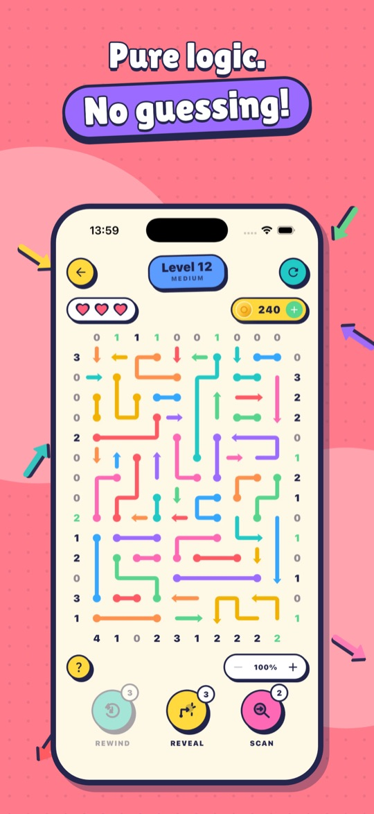
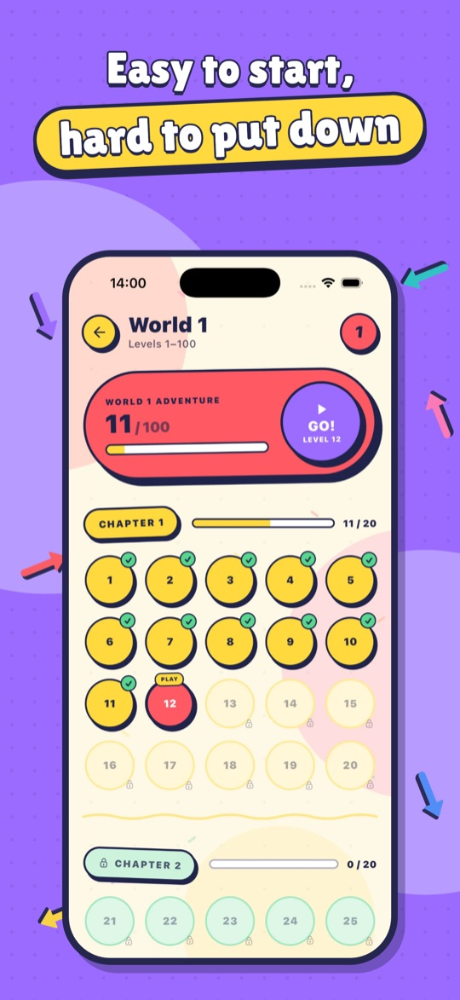

How it plays
- Read the numbersEach number says how many arrows still have to leave through that side of its row or column.
- Find the pointHidden arrows show a dot at both ends. Work out which end is really the arrowhead.
- Tap itRight end: the arrow slides off the board. Wrong end: you lose a heart.
- Clear the boardSend every arrow out to finish the level and earn coins.
Every level can be solved with logic alone.
Screenshots



What's inside
- 2,000 levels across 20 worlds, from gentle warm-ups to big, tangled boards
- Tap a number to highlight its row or column; it's ticked off once accounted for
- Long-press an end to pencil in a guess for free
- Reveal, Scan and Rewind boosters for when you're stuck
- Crowns to collect, coins to earn, and achievements and leaderboards with Game Center on iOS and Google Play Games on Android
- Bonus games between levels: Colour Count, Balloon Pop, Brick Breaker and Tower Jump
- Pinch to zoom on bigger boards; light and dark themes; colourless arrows option
- VoiceOver support; plays offline with no account
Support & FAQs
I bought “No Ads” or coins but didn't get them
Make sure you're signed in to the same Apple Account or Google account you bought with, then open the Shop and tap Restore purchases. “No Ads” restores on any device. Coin packs are consumable, so if coins didn't arrive, email us with the date of purchase and your store receipt and we'll sort it out.
How do I get a refund?
Payments are handled by Apple or Google, so refunds are requested through them: on iOS at reportaproblem.apple.com, on Android from your Google Play order history.
Does “No Ads” remove every advert?
It removes all adverts between levels. Optional “watch an ad for coins” videos stay available, but only play if you choose to watch one.
How do I change my ad privacy choices?
If your region requires consent (for example the UK and EU), open Settings → Privacy choices in the app. On iPhone you can also change tracking permission in Settings → Privacy & Security → Tracking.
Will my progress move to a new phone?
Not yet. Progress is stored on your device and there's no cloud save. Purchases of “No Ads” can be restored on a new device.
How do I start again?
Open Settings, scroll to Danger Zone and tap Reset. This clears levels, coins, boosters and achievements; “No Ads” is kept. See deleting your data for everything else.
I'm stuck on a level
Tap a number to highlight its row or column and count which arrows could still leave that way. When a number needs zero, every arrow in that line must point away; when it needs as many as there are candidates, they all point in. Reveal, Scan and Rewind boosters are there when you need a nudge.
Still need help?
Email us with your device model and what happened, and we'll help.